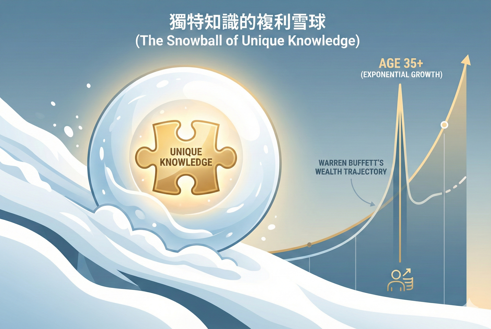

我的 MBTI 是 ISTJ，而我的 DISC 行為模式是 C 型分析型，也就是俗稱極度內向的人。
能不說話就不說話，能不出門就不出門，只想做自己想做的事情。
因此，我們在銷售工作上常會遇到很大的困難。如果你跟我一樣，在文章最後，我會提供給你關於「內向者成為 Top Sales 的三個關鍵」。
但首先，我們得承認：只要處理好「心情」，你將是 Top Sales。
內向者的內心小劇場：完美主義的陷阱
因為我們總想把事做完美，總想在別人眼中是優秀的。
所以我們最害怕的就是被客戶拒絕——沒事想到有事，有事想到大事，大事想到世界末日。
每次面對客戶時總覺得焦慮、說不出話。
越說不出話就越沒自信，客戶的反應也會隨之變得越強勢；當對方越強勢，我們就越退縮，到最後完全喪失了自信，陷入了心理學上的**「習得性無助」**。
最後心裡可能會覺得，明明自己是很會做事且能解決問題的人，但為什麼就是不會說話讓客戶信任？
看著那些雖然會說話但不會做事的人得到好成績，最後告訴自己似乎不適合這個行業。這就是認知失調的作動。
羅斯福總統曾說過的一句話：「我們唯一需要恐懼的，就是恐懼本身。」
對於我們來說，唯一需要解決的，也是恐懼本身。
內向者成為 Top Sales 的三個關鍵天賦
你最大的三個天賦是什麼？要善用你最大的三個天賦，而不是去模仿別人：
1. 耐性：做時間的朋友
「複利效應是世界的第八大奇蹟。」
巴菲特與查理・蒙格之所以身價這麼高，正是因為複利效應——巴菲特 99% 的錢都是 50 歲後賺來的。
你必須運用時間的複利，做難而正確的事情，打造出自己的護城河。
在 35 歲之前，一定要拿出自己的專業。不要一直換工作，就算換工作，專業一樣要是可累積的。你要在一份工作裡面做到最專精、無人能取代。
所謂「三十而立」，就是在 30 歲時，在社會上找到一個生存點，擁有不被他人所取代的技能，也就是《納瓦爾寶典》裡提到的**「獨特知識」**。
2. 獨立思考與辦事能力：效率是一切根本
你是一個很會思考的人，必須要給自己獨立思考的空間，並培養做事的能力。
反覆思考如何優化工作效率、善用工具去簡化流程。雖然你在人脈、社交或名單上的累積可能沒有別人快，但你在做事的時間成本上，一定可以比別人更少，效率是一切的根本。

3. 真誠：最無堅不摧的武器
不要學話術，真誠地說話就是你最大的武器。
如果你照著傳統的方式來學習，一定會覺得不順，因為那是別人的說話方式，並不是你的。
所以，請遵從內心，說你想說的，做你想做的。不要學太多的方法跟技巧，那會讓你忘了你自己。
不要去跟外向的人硬拼：
人家快，你就要慢人家有效率，你就要顧細節人家想要短期利益，你就要追求長期價值
內向的人只要能夠處理好心情，並在工作上善用自己的天賦，你也可以成為 Top Sales，而且是那種無人能取代、既輕鬆又是第一名的 Top Sales。
「不用假裝完美，只要活得純粹；不靠話術推銷，只靠真誠成交。」🔧 你的業績卡住了嗎？因為我也走過那段「心累」的路，所以我懂你的痛。如果你想知道...你的「業務原廠設定」是適合開發還是穩定成長？你容易卡在「開發」、「開口」還是「成交」？👇 點擊連結加入 LINE私訊「想知道銷售天賦」，15分鐘幫你找到業務專屬天賦!https://line.me/ti/p/jzdho94spl
Instagram：eintaixin
個人官網